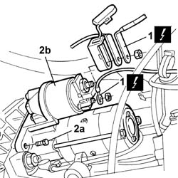
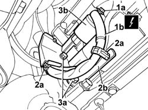
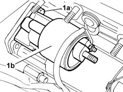
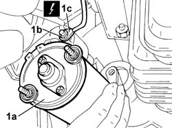
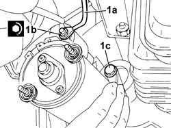
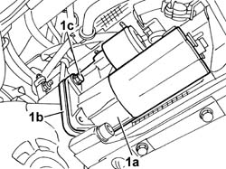
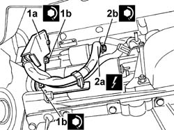
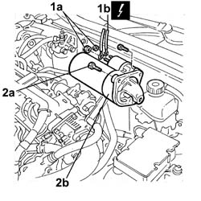

5520B10 STARTER MOTOR - R&R
- Path
- Procedures > 55 ELECTRICAL EQUIPMENT > 5520 ENGINE STARTING > 5520B STARTER MOTOR AND COMPONENTS > 5520B10 STARTER MOTOR - R&R
- Kind
- repair procedure (removal / refitting; the operation number is the code)
- Applies to
- all engines; all production periods
- Interactive page
- https://sloeber94.github.io/elrnDB-lThss/en/#/79439
Applies to: engines: 2.0 TB, 2.4 20V; all production periods
 Removing
Removing
 Refitting
Refitting- Position the vehicle on the lift.
- Make sure that the ignition key is in the OFF position, then disconnect the negative battery terminal (-).
- Raise the vehicle on the lift.
Applies to: engines: 2.4 20V; all production periods
Applies to: engines: 2.0 TB; all production periods
See in Op. 1076B70 EXHAUST PIPE BETWEEN PRECATALYZER AND CATALYZER - R.R.
Applies to: engines: 2.0 TB, 2.4 20V; all production periods
1. Disconnect the electrical connections from the starter motor.
 | Description | Connector |
|---|---|---|
1 | Starter motor | A020A |
| Description | Connector |
|---|---|---|
1 | Starter motor | A020B |
2. Undo the bolts (2a) and remove the starter motor (2b).

Applies to: engines: 2.0 TB, 2.4 20V; all production periods
Refitting
Removing- Place the starter motor in its housing and secure it by tightening the bolts to the recommended torque.
 | Value - daNm | Fastening | Component | Ø |
|---|---|---|---|---|
. | 2.7 | Bolt | STARTER MOTOR | M8 |
- Connect the electrical connections to the starter motor.
| Description | Connector |
|---|---|---|
. | Starter motor | A020A |
| Description | Connector |
|---|---|---|
. | Starter motor | A020B |
Applies to: engines: 2.4 20V; all production periods
Applies to: engines: 2.0 TB; all production periods
See in Op. 1076B70 EXHAUST PIPE BETWEEN PRECATALYZER AND CATALYZER - R.R.
Applies to: engines: 2.0 TB, 2.4 20V; all production periods
See in Op. 7055B54 PROTECTION/GUARD under engine - R.R.
- Lower the vehicle on the lift.
- Connect the negative battery terminal.
- Remove the vehicle from the lift.
Applies to: engines: 3.0 V6, 3.2 V6; all production periods
Removing
Refitting- Position the vehicle on a lift.
- Open the boot and disconnect the negative battery terminal.
See in Op. 7040D50 ENGINE COMPARTMENT UPPER SOUND INSULATION SHIELD - R.R.
See in Op. 4450B04 Right FRONT WHEEL (one) - R.R.
See in Op. 7055B64 Engine compartment DUST SEAL in front wheel arch (one), left or right - R.R.
See in Op. 7055B54 PROTECTION/GUARD under engine - R.R.
See in Op. 1048A21 AIR INLET HOSE FROM INTAKE TO FILTER - R.R.
See in Op. 1048A28 vacuum air circuit resonator pipe - r+r
See in Op. 1008C10 Power unit REACTION ROD - Replace
See in Op. 1048A11 COMPLETE AIR FILTER -R.R.
See in Op. 1072B50 Air CHAMBER - R.R.
See in Op. 2710A31 INTERMEDIATE DRIVE SHAFT - R.R.
See in Op. 1084B30 CARTRIDGE ENGINE OIL FILTER -R.R.
See in Op. 1076B84 EXHAUST PIPE BETWEEN RIGHT PRECONVERTER AND CATALYTIC CONVERTER - R.R.
See in Op. 1080B39 RIGHT CATALYTIC PRECONVERTER - R.R. or Replace Gasket
| Description | Connector |
|---|---|---|
1b | Starter motor | A020A |
1. Undo the nut (1a) fixing the starter motor supply lead (1b).
2. Open the retaining bands (2a) on the bracket (2b).
3. Undo the two lower bolts (3a) fixing the starter motor (3b) and remove the cable retaining bracket.

Applies to: engines: 3.0 V6, 3.2 V6; all production periods
1. Lower the vehicle and undo the upper bolt (1a) fixing the starter motor (1b).

Applies to: engines: 3.0 V6, 3.2 V6; all production periods
- Raise the vehicle
1. Remove the starter motor (1a) from its housing and undo the nut (1b) fixing the starter motor relay supply lead (1c), then remove the starter motor complete with rear spacer plate.
| Description | Connector |
|---|---|---|
1c | Starter motor | A020A |
| Description | Connector |
|---|---|---|
1c | Starter motor | A020B |

Applies to: engines: 3.0 V6, 3.2 V6; all production periods
Refitting
Removing1. Before positioning the starter motor, complete with spacer, in its housing, connect the relay supply lead (1a), tightening the fixing nut (1b) to the recommend torque and position the upper fixing bolt (1c).
| Value - daNm | Fastening | Component | Ø |
|---|---|---|---|---|
1b | 0.5 | Nut | STARTER MOTOR | M8 |

Applies to: engines: 3.0 V6, 3.2 V6; all production periods
1. Position the starter motor (1a), complete with spacer (1b), then screw in the higher of the two lower fixing bolts (1a) to ensure that the starter motor is correctly positioned without fully tightening it.

Applies to: engines: 3.0 V6, 3.2 V6; all production periods
- Lower the vehicle and tighten the upper fixing bolt positioned previously to the recommended torque.
| Value - daNm | Fastening | Component | Ø |
|---|---|---|---|---|
1.5 | Bolt | STARTER MOTOR | M8 |
- Raise the vehicle and remove the lower bolt positioned previously.
1. Position the starter motor lead retaining bracket (1a) and tighten the lower bolts (1b) fixing the starter motor.
| Value - daNm | Fastening | Component | Ø |
|---|---|---|---|---|
1b | 1.5 | Bolt | STARTER MOTOR | M8 |
2. Position the starter motor supply lead (2a) and tighten the nut (2b) fixing the connection to the recommended torque.
| Description | Connector |
|---|---|---|
2a | Starter motor | A020A |
| Value - daNm | Fastening | Component | Ø |
|---|---|---|---|---|
2b | 0.9 | Nut | STARTER MOTOR | M8 |
| Description | Connector |
|---|---|---|
2a | Starter motor | A020B |

Applies to: engines: 3.0 V6, 3.2 V6; all production periods
See in Op. 1080B39 RIGHT CATALYTIC PRECONVERTER - R.R. or Replace Gasket
See in Op. 1076B84 EXHAUST PIPE BETWEEN RIGHT PRECONVERTER AND CATALYTIC CONVERTER - R.R.
See in Op. 1084B30 CARTRIDGE ENGINE OIL FILTER -R.R.
See in Op. 2710A31 INTERMEDIATE DRIVE SHAFT - R.R.
See in Op. 1072B50 Air CHAMBER - R.R.
See in Op. 1048A11 COMPLETE AIR FILTER -R.R.
See in Op. 1008C10 Power unit REACTION ROD - Replace
See in Op. 1048A28 vacuum air circuit resonator pipe - r+r
See in Op. 1048A21 AIR INLET HOSE FROM INTAKE TO FILTER - R.R.
See in Op. 7055B54 PROTECTION/GUARD under engine - R.R.
See in Op. 7055B64 Engine compartment DUST SEAL in front wheel arch (one), left or right - R.R.
See in Op. 4450B04 Right FRONT WHEEL (one) - R.R.
See in Op. 7040D50 ENGINE COMPARTMENT UPPER SOUND INSULATION SHIELD - R.R.
- Connect the negative battery lead, then close the boot.
- Remove the vehicle from the lift.
Applies to: engines: 2.4 JTD 10V, 2.4 JTD 20V; all production periods
Removing
RefittingSee in Op. 1016A10 SOUND-PROOFING COVER - R.R.
See in Op. 7040D50 ENGINE COMPARTMENT UPPER SOUND INSULATION SHIELD - R.R.
- Disconnect the negative battery terminal.
1. Undo the fixing nuts (1a) and disconnect the electrical connections (1b).
| Description | Connector |
|---|---|---|
1b | Starter motor | A020A |
| Description | Connector |
|---|---|---|
1b | Starter motor | A020B |
2. Undo the retaining bolts (2a) and remove starter motor (2b).

Applies to: engines: 2.4 JTD 10V, 2.4 JTD 20V; all production periods
Refitting
Removing- Place the starter motor in position and tighten the fixing bolts.
- Connect the electrical connections and secure them using the nuts.
| Description | Connector |
|---|---|---|
. | Starter motor | A020A |
| Description | Connector |
|---|---|---|
. | Starter motor | A020B |
- Connect the negative battery terminal.
See in Op. 7040D50 ENGINE COMPARTMENT UPPER SOUND INSULATION SHIELD - R.R.
Topics linked from this page (16)
- 1008C10 Power unit REACTION ROD - Replace
- 1016A10 SOUND-PROOFING COVER - R.R.
- 1048A11 COMPLETE AIR FILTER -R.R.
- 1048A21 AIR INLET HOSE FROM INTAKE TO FILTER - R.R.
- 1048A28 vacuum air circuit resonator pipe - r+r
- 1072B50 Air CHAMBER - R.R.
- 1076B68 EXHAUST PIPE FLEXIBLE SECTION - R.R.
- 1076B70 EXHAUST PIPE BETWEEN PRECATALYZER AND CATALYZER - R.R.
- 1076B84 EXHAUST PIPE BETWEEN RIGHT PRECONVERTER AND CATALYTIC CONVERTER - R.R.
- 1080B39 RIGHT CATALYTIC PRECONVERTER - R.R. or Replace Gasket
- 1084B30 CARTRIDGE ENGINE OIL FILTER -R.R.
- 2710A31 INTERMEDIATE DRIVE SHAFT - R.R.
- 4450B04 Right FRONT WHEEL (one) - R.R.
- 7040D50 ENGINE COMPARTMENT UPPER SOUND INSULATION SHIELD - R.R.
- 7055B54 PROTECTION/GUARD under engine - R.R.
- 7055B64 Engine compartment DUST SEAL in front wheel arch (one), left or right - R.R.